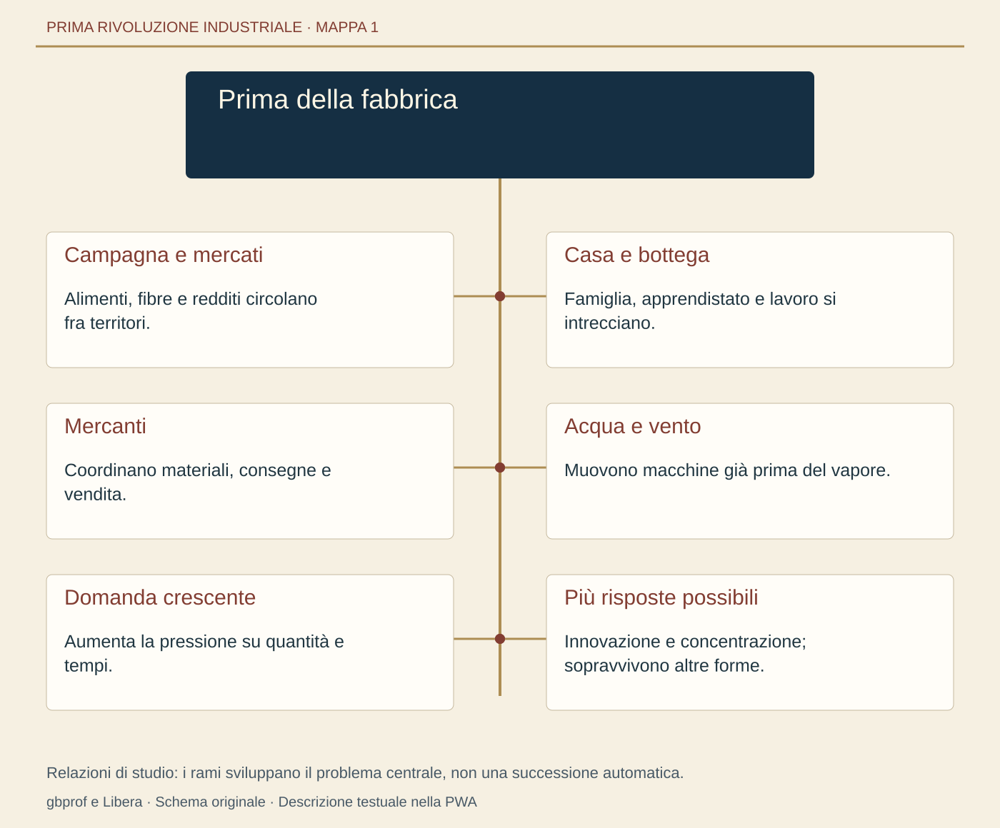
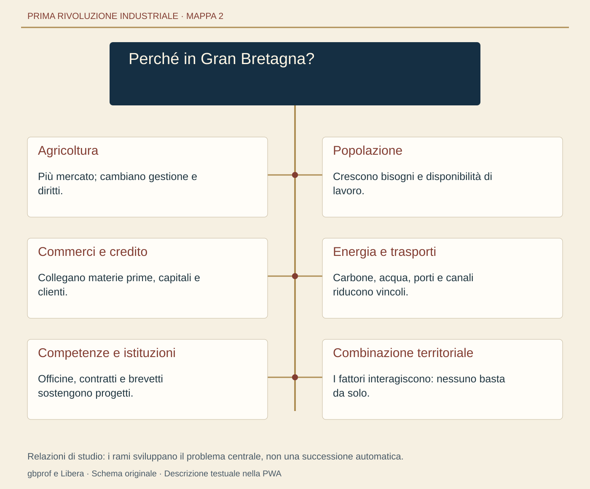
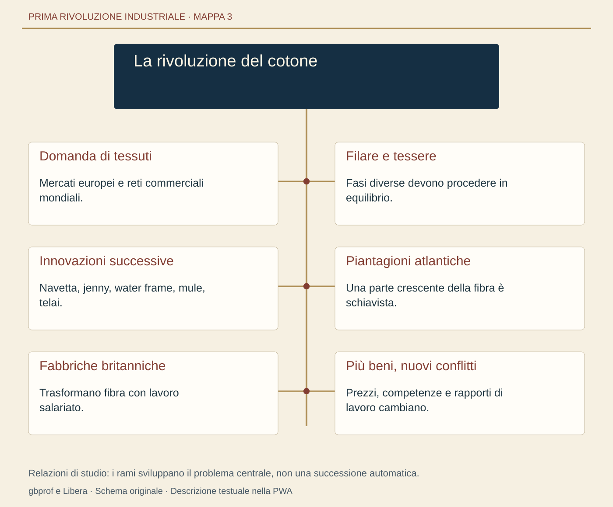
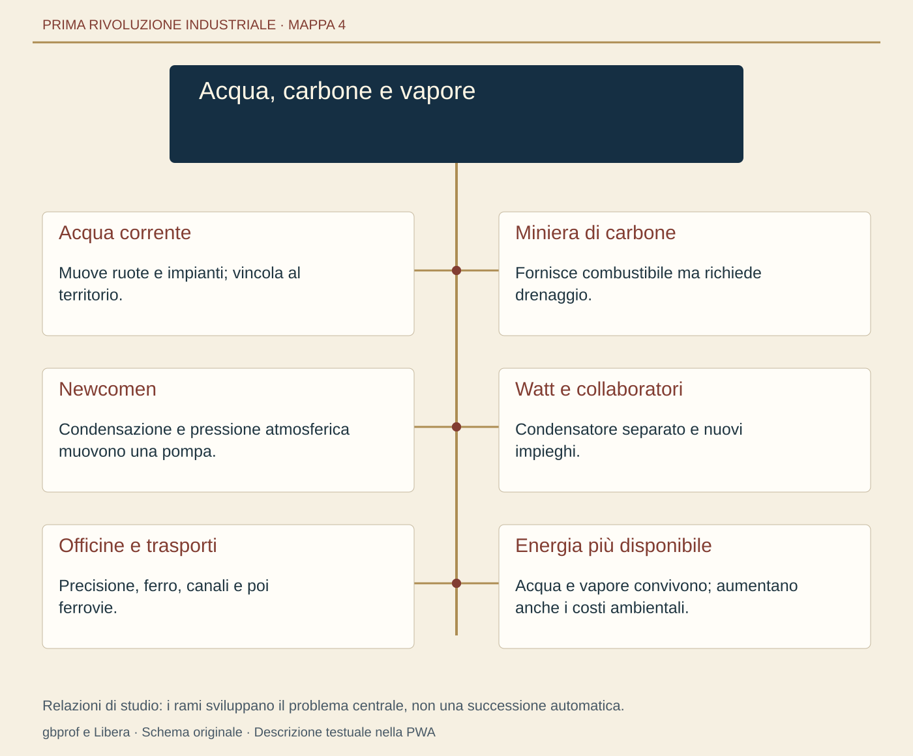
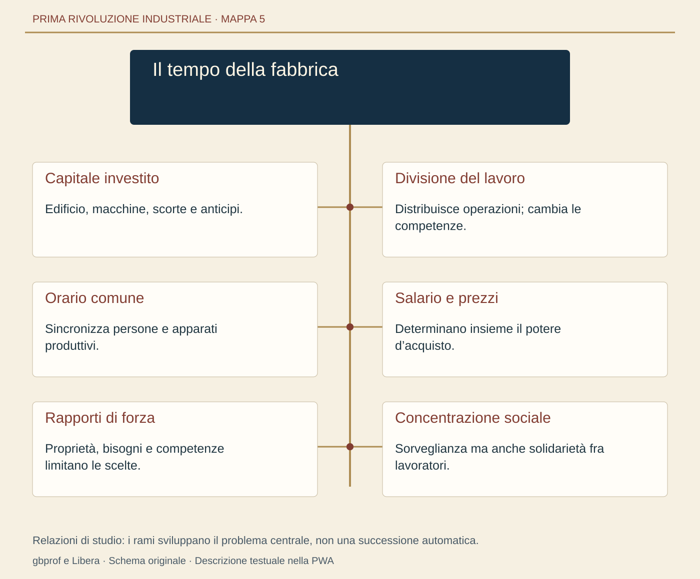
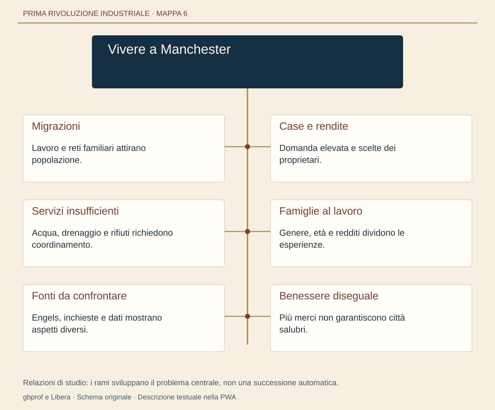
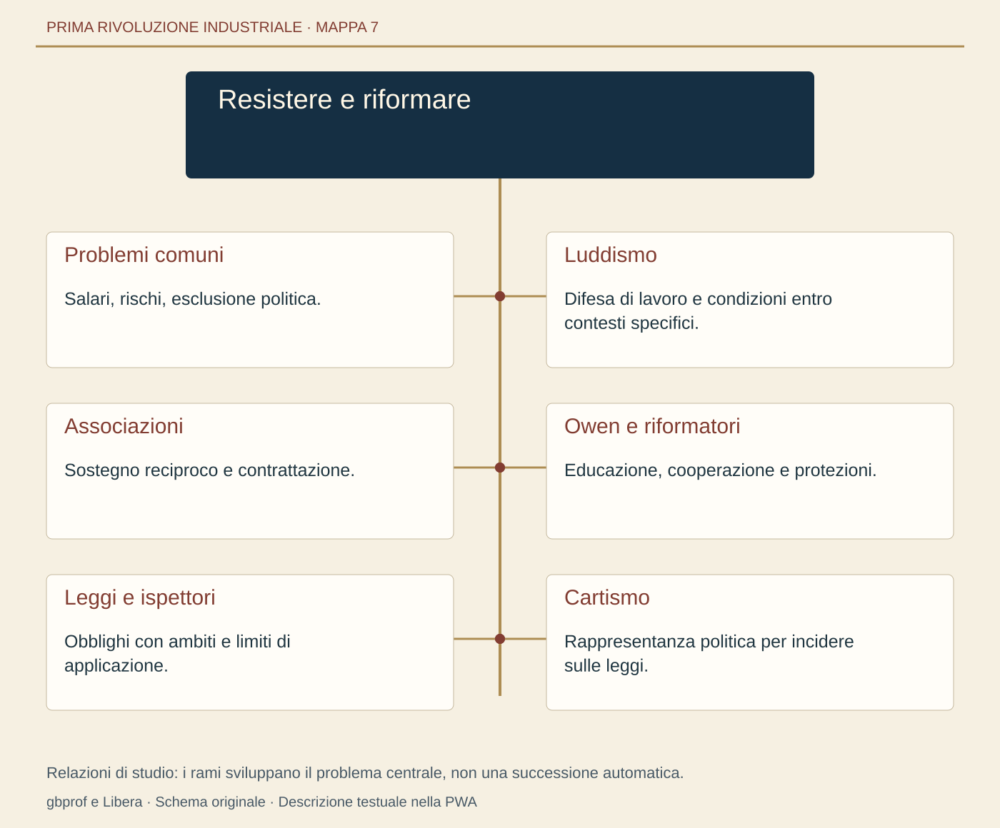
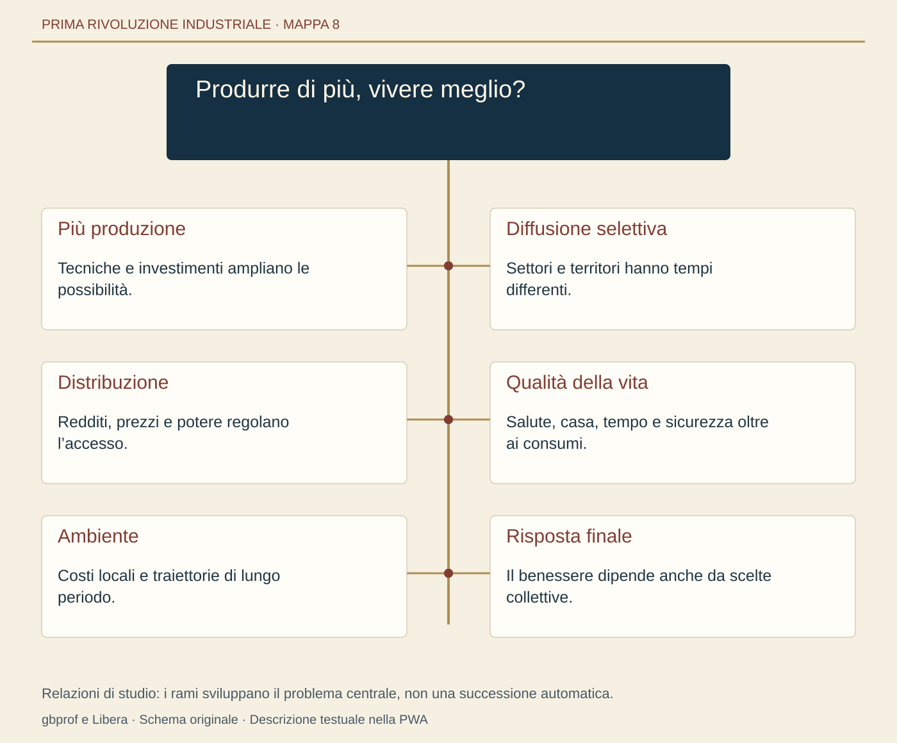
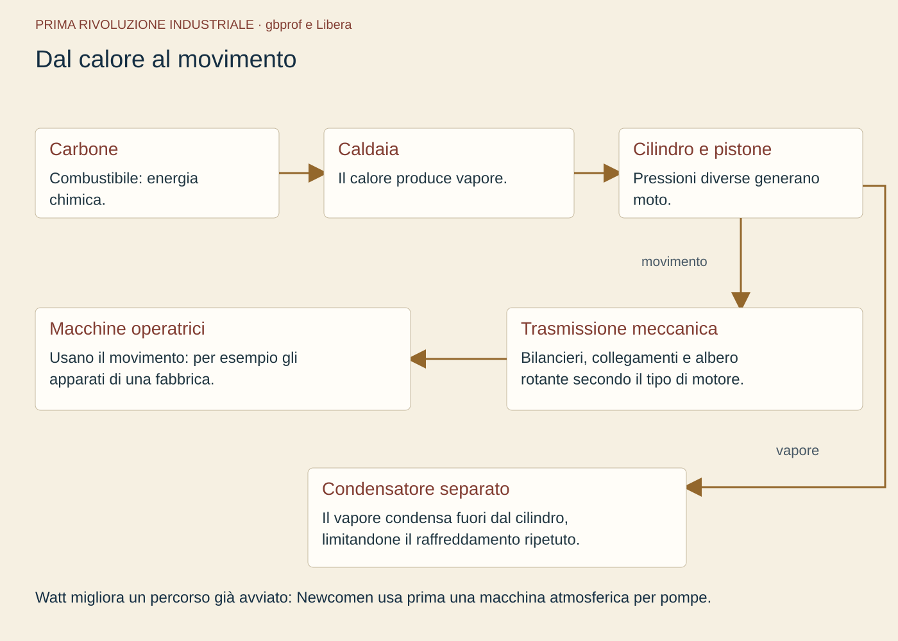

Quando il mondo cominciò a vivere al ritmo delle macchine
Otto lezioni, apparati e approfondimenti. Versione leggibile senza JavaScript e stampabile dal browser.
1. Prima della fabbrica: un mondo di campi, case e botteghe
0. Domanda generatrice
Come si produce un tessuto quando non esiste ancora il grande cotonificio? Immagina una famiglia che alterna lavoro nei campi, filatura e tessitura. È una scena didattica, non una testimonianza individuale. La casa contiene strumenti di lavoro, scorte alimentari e persone di età diverse. Il ritmo delle attività dipende dalle stagioni, dagli ordini di un mercante, dalla luce disponibile e dai bisogni familiari. Questa organizzazione non è semplice né necessariamente serena: tiene insieme molte forme di dipendenza.
In sintesi: per capire la fabbrica dobbiamo osservare un mondo che produce e commercia già, con altri strumenti e rapporti di lavoro.
1. Il mondo precedente
Nell’Europa del primo Settecento gran parte della popolazione vive di agricoltura, ma le regioni differiscono. Alcune sono fortemente inserite nei mercati; altre destinano una quota maggiore della produzione al consumo locale. Anche chi coltiva per nutrire la propria famiglia deve spesso vendere, pagare affitti, acquistare utensili e affrontare debiti. Campagna e città si scambiano alimenti, materiali, servizi e persone. Non sono due universi separati.
La bottega artigiana riunisce competenze, attrezzi e relazioni commerciali. Il maestro può lavorare con familiari, apprendisti e salariati. In alcune città le corporazioni regolano accesso al mestiere, apprendistato e qualità dei prodotti; il loro peso varia. Esistono anche manifatture con numerosi lavoratori concentrati nello stesso edificio, senza la meccanizzazione che caratterizzerà molti stabilimenti industriali. Grande edificio e fabbrica meccanizzata non sono sinonimi.
2. Le fratture
Nel lavoro a domicilio un mercante può distribuire materia prima a famiglie che la trasformano con i propri strumenti, ritirando poi il prodotto. La remunerazione è spesso a cottimo, cioè legata alla quantità consegnata. Questa rete permette di produrre per mercati lontani senza riunire tutti in un solo luogo. Alcuni storici parlano di protoindustria per determinate forme di produzione rurale destinata al mercato. Non ogni regione protoindustriale diventerà però un distretto di fabbriche.
La crescita degli scambi rende più importante consegnare quantità regolari, rispettare scadenze e controllare la qualità. Il mercante deve coordinare lavoratori dispersi; la famiglia deve distribuire tempo ed energie tra attività differenti. Se cresce la richiesta di tessuti, possono mancare filati o aumentare i costi. Sono tensioni concrete, non la prova che il passaggio alla macchina sia inevitabile. Esistono più risposte possibili: nuovi lavoratori, miglioramenti tecnici, contratti diversi.
3. Attori, gruppi e conflitti
La casa non è uno spazio di completa autonomia. Il mercante può controllare il credito e l’accesso al mercato; all’interno della famiglia, genere ed età distribuiscono compiti e autorità. Donne e bambini lavorano anche prima della rivoluzione industriale, nei campi, nei servizi e nella produzione domestica. La novità della fabbrica non sarà quindi l’invenzione del loro lavoro, ma una trasformazione delle condizioni, della concentrazione e del controllo.
In sintesi: il lavoro domestico offre una certa organizzazione familiare dei tempi, ma rimane soggetto a povertà, gerarchie e dipendenze commerciali. Per questo non possiamo opporre una campagna libera a una fabbrica interamente nuova.
4. Il processo storico
Muscoli umani e animali forniscono energia; acqua e vento azionano mulini e altri dispositivi. Un mulino ad acqua è una macchina: trasforma il movimento di una corrente in lavoro utile. La sua presenza mostra quanto sia sbagliato pensare che prima del vapore si lavorasse soltanto a mano. Portata dei fiumi, siccità, ubicazione e costi di manutenzione condizionano però la disponibilità di questa energia.
Anche il combustibile ha una geografia. Legna e carbone di legna dipendono dalle risorse del territorio; il carbone minerale è già utilizzato prima dei grandi cotonifici. Trasportare materiali pesanti su strade difficili costa. Vie navigabili e porti possono perciò contare quanto un’invenzione. Tecniche, ambiente e mercati formano un sistema: cambiare un elemento modifica le convenienze degli altri, senza cancellarli immediatamente.
5. Le fonti in dialogo
Per ricostruire questo mondo possiamo interrogare inventari domestici, contratti di apprendistato e registri commerciali. Un inventario con un telaio dimostra il possesso di uno strumento, non quante ore ciascun familiare lavorasse. Un registro di pagamenti permette di seguire quantità e remunerazioni, ma lascia spesso in ombra il lavoro non pagato separatamente. Confronta queste tipologie: quale documento cercheresti per capire chi controllava la vendita del tessuto?
6. Conseguenze e nuovo assetto
La futura industria utilizzerà competenze, reti commerciali e lavoratori provenienti da questo mondo. Molte attività domestiche e artigiane continueranno insieme alle fabbriche. La trasformazione non riguarda tutte le persone nello stesso anno: interessa prima alcuni settori e territori. Per comprenderla bisogna seguire i collegamenti fra forme produttive, non sostituire una fotografia del “prima” con una del “dopo”.
7. Conclusione
In sintesi: prima della fabbrica esistono produzione per il mercato, macchine, salari e dipendenze. La trasformazione industriale combina questi elementi in modi nuovi, ampliando meccanizzazione e concentrazione. Casa, bottega e manifattura non spariscono di colpo. La domanda successiva è geografica: perché questa combinazione prende particolare forza proprio in Gran Bretagna?
Saperi irrinunciabili
L’agricoltura prevale, ma campagne e città sono collegate dai mercati.
La bottega riunisce strumenti, competenze e relazioni di apprendistato.
Esistono manifatture concentrate anche prima della meccanizzazione industriale.
Il lavoro a domicilio può essere coordinato da mercanti.
Il cottimo lega il pagamento alla quantità consegnata.
Donne e bambini lavorano anche prima delle fabbriche.
Il lavoro domestico non coincide con piena autonomia economica.
Acqua e vento alimentano macchine prima della diffusione del vapore.
La crescita della domanda crea problemi di coordinamento della produzione.
Forme domestiche, artigiane e industriali possono convivere.
Vocabolario
Manifattura
Produzione di beni mediante lavorazioni organizzate, anche manuali; può essere concentrata o diffusa.
Lavoro a domicilio
Produzione svolta in casa, spesso per un mercante che fornisce materiali e ritira il prodotto.
Cottimo
Remunerazione legata alla quantità di lavoro o di prodotto consegnata.
Protoindustria
Categoria storica per alcune produzioni rurali destinate a mercati esterni, anteriori o parallele all’industria di fabbrica.
Corporazione
Associazione di mestiere che, in determinati contesti, regola accesso, apprendistato e produzione.

Domanda di tessuti → più ordini alle famiglie → difficoltà di coordinamento e approvvigionamento → ricerca di nuove soluzioni organizzative e tecniche.
Campagna e mercati
Alimenti, fibre e redditi circolano fra territori.
Casa e bottega
Famiglia, apprendistato e lavoro si intrecciano.
Mercanti
Coordinano materiali, consegne e vendita.
Acqua e vento
Muovono macchine già prima del vapore.
Domanda crescente
Aumenta la pressione su quantità e tempi.
Più risposte possibili
Innovazione e concentrazione; sopravvivono altre forme.
Verifica e recupero
Un mercante distribuisce fibra a famiglie e ritira il filato: quale rapporto descrive?
Una fabbrica a vapore
Lavoro a domicilio organizzato per il mercato
Produzione esclusiva per autoconsumo
Risposta e spiegazione
Lavoro a domicilio organizzato per il mercato. La lavorazione avviene nelle case, ma il mercante collega il prodotto a un mercato esterno.
Se in molte società esistono artigiani abili e commerci, perché l’industrializzazione accelera dapprima in alcune regioni britanniche? Dire “perché gli inglesi inventano le macchine” sposta soltanto il problema. Dobbiamo capire quali risorse, mercati e istituzioni rendano possibile costruirle, finanziarle e utilizzarle con convenienza. La spiegazione riguarda un insieme di condizioni, con un peso relativo ancora discusso dagli storici.
In sintesi: una risorsa isolata non basta. Il problema è capire come le condizioni si sostengono a vicenda.
1. Il mondo precedente
La Gran Bretagna del Settecento comprende Inghilterra, Galles e Scozia. Non bisogna confonderla automaticamente con l’intero Regno Unito nelle sue successive configurazioni. Le distanze interne relativamente contenute, la navigazione costiera e una rete commerciale sviluppata favoriscono gli scambi, ma non rendono ogni territorio ugualmente accessibile. Il nord industriale, i distretti delle Midlands e le regioni scozzesi seguono percorsi differenti.
Le trasformazioni agricole comprendono rotazioni, miglioramenti nell’allevamento, investimenti e una maggiore produzione per il mercato. Le recinzioni, o enclosures, riorganizzano terre e diritti d’uso, con forme negoziate o stabilite per legge. Non sono semplicemente siepi: possono cambiare chi ha accesso al pascolo e alle risorse comuni. Le conseguenze dipendono dalla situazione precedente e dalla capacità delle famiglie di difendere i propri diritti.
2. Le fratture
Una gestione più concentrata può favorire investimenti, mentre la perdita di usi collettivi può indebolire famiglie rurali povere. Non ne segue che ogni contadino recintato parta subito per Manchester. Alcuni rimangono come salariati agricoli, altri svolgono attività diverse o migrano in tempi successivi. Agricoltura e industria sono collegate anche attraverso l’offerta di alimenti, la domanda di attrezzi e la circolazione di redditi.
La popolazione cresce e con essa aumenta la domanda di beni, ma crescono anche i bisogni alimentari e abitativi. La crescita demografica può ampliare la disponibilità di lavoratori; non garantisce salari, occupazione o sviluppo. Deve incontrare investimenti e sbocchi commerciali. La possibilità di vendere di più incoraggia alcuni imprenditori ad aumentare la capacità produttiva, purché i costi non assorbano i ricavi.
3. Attori, gruppi e conflitti
Proprietari terrieri, mercanti, artigiani, finanziatori e lavoratori partecipano con interessi diversi. Banche e reti personali aiutano a mobilitare denaro, ma un progetto può fallire. Il credito permette di anticipare spese prima delle vendite; crea anche obblighi di restituzione. Un imprenditore non acquista soltanto una macchina: deve procurare un edificio, energia, materia prima, manutenzione e persone capaci di farla funzionare.
L’espansione commerciale e coloniale britannica amplia accesso a materie prime e mercati attraverso rapporti spesso coercitivi. La protezione navale e la potenza politica contano. Non attribuiamo però a un unico flusso di profitti coloniali l’intero finanziamento dell’industria: esistono più fonti di capitale e differenze tra imprese. È documentato il legame con l’economia atlantica; la sua incidenza complessiva è oggetto di interpretazioni.
4. Il processo storico
Carbone, competenze meccaniche e domanda si incontrano in territori specifici. Il carbone può rendere conveniente l’uso di energia termica dove è disponibile a costi sostenibili. Per altri stabilimenti l’acqua resta competitiva. Canali e porti riducono il costo di materiali pesanti. Osservando una carta bisogna quindi collegare giacimenti, vie di trasporto e centri produttivi, senza trattare l’intera isola come una fabbrica uniforme.
Le istituzioni tutelano proprietà e contratti e i brevetti possono incentivare investimenti, ma possono anche produrre controversie e limitare l’uso di tecniche. Le conoscenze circolano fra officine, società scientifiche e rapporti personali. Il sapere pratico degli artigiani è decisivo: non tutte le innovazioni derivano dall’applicazione immediata di una scoperta scientifica. L’Illuminismo è parte del contesto culturale, non una causa sufficiente dell’industrializzazione.
5. Le fonti in dialogo
La carta del percorso localizza alcuni poli: Manchester per il cotone, Leeds per la lana, Birmingham per le lavorazioni metalliche, Glasgow e la valle del Clyde per diversi sviluppi manifatturieri. Liverpool collega il Lancashire al traffico atlantico. La carta è una selezione didattica, non una misura della produzione. Confrontala con gli atti sulle recinzioni: una fonte territoriale e una norma rispondono a domande differenti.
6. Conseguenze e nuovo assetto
L’incontro di queste condizioni genera opportunità cumulative: più attività richiama competenze, fornitori e investimenti. Produce anche squilibri territoriali. Gli storici discutono quanto contino salari relativamente alti, energia relativamente economica, impero e istituzioni. Una spiegazione plurale non significa rinunciare alle cause: significa precisare scala, periodo e prove prima di attribuire un ruolo a ciascun fattore.
7. Conclusione
In sintesi: l’avvio britannico nasce dall’interazione fra agricoltura, popolazione, commerci, risorse, capitali, infrastrutture e capacità tecniche. Nessuna condizione produce automaticamente la fabbrica. I benefici e i costi si distribuiscono in modo diverso. Per vedere questa combinazione in azione seguiamo ora una materia prima che attraversa continenti: il cotone.
Saperi irrinunciabili
L’industrializzazione britannica richiede una spiegazione plurale.
Le recinzioni modificano proprietà e diritti d’uso, non soltanto il paesaggio.
La perdita di usi comuni può indebolire famiglie rurali.
Non ogni recinzione provoca una migrazione immediata in fabbrica.
Agricoltura e industria sono collegate da cibo, domanda e circolazione di redditi.
La crescita demografica amplia bisogni e disponibilità di lavoro, ma non garantisce sviluppo.
Credito e investimenti consentono di anticipare costi rispetto alle vendite.
Commerci coloniali e coercizione partecipano alla formazione delle reti produttive.
Carbone, porti e canali contano in rapporto ai costi e alla geografia.
Saperi pratici e istituzioni favoriscono opportunità senza rendere l’esito inevitabile.
Vocabolario
Enclosures
Recinzioni e riorganizzazioni fondiarie che possono modificare anche diritti d’uso collettivi.
Usi comuni
Diritti consuetudinari di accesso a risorse, per esempio pascolo o raccolta, secondo regole locali.
Credito
Disponibilità di risorse ricevute con un obbligo di restituzione secondo condizioni concordate.
Investimento
Impiego di risorse in vista di risultati futuri, con costi e rischi.
Brevetto
Diritto esclusivo temporaneo riconosciuto su una soluzione tecnica secondo un ordinamento.
Distretto industriale
Area di concentrazione di attività produttive e competenze collegate; qui usato in senso descrittivo storico.

Agricoltura, commercio, risorse e saperi → creano opportunità di investimento → imprese in territori favorevoli → crescita selettiva e nuovi squilibri.
Agricoltura
Più mercato; cambiano gestione e diritti.
Popolazione
Crescono bisogni e disponibilità di lavoro.
Commerci e credito
Collegano materie prime, capitali e clienti.
Energia e trasporti
Carbone, acqua, porti e canali riducono vincoli.
Competenze e istituzioni
Officine, contratti e brevetti sostengono progetti.
Combinazione territoriale
I fattori interagiscono: nessuno basta da solo.
Verifica e recupero
Un territorio possiede carbone ma pochi collegamenti: che cosa possiamo concludere?
Il carbone garantisce da solo lo sviluppo
I trasporti diventano irrilevanti
La convenienza dipende anche da accesso a mercati e costi
Risposta e spiegazione
La convenienza dipende anche da accesso a mercati e costi. Una risorsa deve essere estratta, trasportata e impiegata: il suo effetto dipende da altre condizioni.
Quale effetto delle enclosures va considerato oltre alle siepi?
La trasformazione dei diritti d’uso e dell’accesso alle risorse
L’abolizione di ogni lavoro agricolo
L’immediato suffragio universale
Risposta e spiegazione
La trasformazione dei diritti d’uso e dell’accesso alle risorse. La riorganizzazione fondiaria può favorire investimenti e contemporaneamente indebolire chi perde usi comuni.
Perché il solo aumento della popolazione non spiega l’industrializzazione?
Perché la domanda non conta
Perché bisogni e manodopera devono incontrare investimenti e mercati
Perché le città non hanno bisogno di cibo
Risposta e spiegazione
Perché bisogni e manodopera devono incontrare investimenti e mercati. Più persone possono significare più domanda ma anche più difficoltà: servono opportunità produttive e risorse.
Un vestito può raccontare una trasformazione mondiale? Per rispondere non basta guardare il telaio: dobbiamo seguire la fibra coltivata, il filo, la stoffa e la vendita. In ogni passaggio lavorano persone inserite in rapporti differenti. Il cotone permette di collegare innovazione tecnica, domanda dei consumatori, commerci coloniali e violenza schiavista, evitando di chiudere la storia dell’industria dentro i confini britannici.
In sintesi: il tessuto è il risultato di una catena di operazioni e di rapporti sociali che attraversa l’Atlantico e oltre.
1. Il mondo precedente
I tessuti di cotone circolano molto prima delle macchine inglesi. L’India possiede una lunga tradizione di produzione e commercio di stoffe apprezzate per qualità e disegni. I consumatori europei conoscono questi prodotti attraverso reti commerciali. L’affermazione britannica si inserisce quindi in un mondo tessile già sviluppato e modifica rapporti di concorrenza, anche attraverso potere coloniale e politiche commerciali.
Dopo la raccolta e la separazione dei semi, le fibre vengono preparate, allineate e filate. Filare significa trasformarle in un filo continuo; tessere significa intrecciare fili per ottenere una stoffa. Non sono due nomi dello stesso lavoro. La preparazione, la tintura e la finitura richiedono altre operazioni. Se una fase accelera, la fase precedente deve fornire materiali sufficienti e quella successiva deve assorbirli.
2. Le fratture
La navetta volante di John Kay, brevettata nel 1733, accelera determinate operazioni di tessitura. Cresce così la pressione sulla disponibilità di filato. Nel corso del secolo si sviluppano dispositivi per filare più fili o sfruttare energia meccanica: la spinning jenny di James Hargreaves, il water frame associato a Richard Arkwright e la mule di Samuel Crompton. Sono risposte differenti, non tre nomi intercambiabili.
La jenny può essere azionata manualmente e non richiede per forza un grande stabilimento. Il water frame favorisce una produzione concentrata che utilizza energia idraulica. La mule combina caratteristiche di tecniche precedenti. Il telaio meccanico si diffonde con difficoltà e miglioramenti successivi: la filatura non trascina immediatamente tutta la tessitura dentro fabbriche uguali. Le innovazioni creano nuovi squilibri che altre innovazioni cercano di risolvere.
3. Attori, gruppi e conflitti
Inventori e imprenditori devono trovare denaro, collaboratori e compratori; operai specializzati e artigiani costruiscono e mantengono i meccanismi. Arkwright è importante anche come organizzatore del sistema produttivo. Un brevetto attribuisce diritti legali, ma non dimostra che una persona abbia lavorato isolatamente. Controversie e imitazioni fanno parte della storia della tecnica. La macchina è il risultato di capacità distribuite.
Dall’altro lato dell’Atlantico, una parte crescente del cotone impiegato dall’industria britannica proviene da piantagioni schiaviste, soprattutto statunitensi nell’Ottocento. La crescita della domanda può sostenere l’espansione della produzione coercitiva. L’abolizione britannica della tratta nel 1807 non abolisce la schiavitù in tutti i paesi e non interrompe l’importazione di cotone prodotto da persone schiavizzate. Le cronologie vanno tenute distinte.
4. Il processo storico
Una balla attraversa il mare, arriva in un porto, raggiunge il distretto manifatturiero, viene trasformata e riparte sotto forma di tessuto. Trasporti, assicurazioni, credito e magazzini rendono possibile la circolazione. Lo schema della filiera mostra questo percorso senza fingere che tutta la fibra segua una sola rotta. Il mercato del prodotto finito collega la fabbrica ai consumi interni e alle esportazioni.
Quando il costo di alcune operazioni diminuisce, diventa possibile vendere quantità maggiori a prezzi più accessibili, ma i risultati dipendono anche da concorrenza e domanda. Più produzione non significa automaticamente salari migliori. Una macchina può accrescere la produttività e contemporaneamente indebolire una competenza tradizionale. I benefici per consumatori e proprietari non coincidono necessariamente con quelli dei lavoratori di ogni fase.
5. Le fonti in dialogo
Osserva un disegno tecnico e un registro commerciale come tipologie di fonte. Il primo permette di ricostruire un meccanismo, il secondo l’origine e la quantità di una merce. Nessuno dei due, da solo, racconta l’esperienza di chi coltiva o lavora. Per questo la storia del cotone va letta insieme alle fonti sulla schiavitù. Domanda: quali persone scompaiono se raccontiamo soltanto l’inventore e la macchina?
6. Conseguenze e nuovo assetto
Il lavoratore salariato può subire coercizioni economiche, vincoli giuridici e condizioni durissime; non è però una proprietà acquistabile come la persona schiavizzata. Distinguere queste condizioni non riduce la gravità dello sfruttamento: rende più precisa l’analisi. La filiera connette rapporti di lavoro diversi dentro lo stesso sistema commerciale e mostra che modernizzazione tecnica e libertà non avanzano sempre insieme.
7. Conclusione
In sintesi: il cotone collega domanda, innovazioni successive, organizzazione della fabbrica e reti mondiali. L’espansione industriale britannica è intrecciata alla produzione schiavista senza rendere identici schiavitù e salariato. La macchina risolve alcuni problemi e ne apre altri. Per farne funzionare sempre di più occorre ora affrontare la questione dell’energia.
Saperi irrinunciabili
L’industria britannica si inserisce in un commercio tessile preesistente e mondiale.
Filare produce filo; tessere intreccia fili in una stoffa.
L’accelerazione di una fase può creare strozzature nelle altre.
La navetta volante riguarda la tessitura.
Jenny, water frame e mule sono soluzioni diverse alla filatura.
La jenny può funzionare manualmente e in piccoli ambienti.
Il water frame favorisce concentrazione ed energia idraulica.
Il cotone atlantico lega fabbriche britanniche e piantagioni schiaviste.
Abolire la tratta britannica non significa abolire la schiavitù ovunque.
Schiavitù e salariato sono condizioni giuridiche diverse inserite in reti collegate.
Vocabolario
Filatura
Trasformazione delle fibre in un filo continuo.
Tessitura
Intreccio di fili per ottenere una stoffa.
Filiera
Insieme collegato delle fasi che portano dalla materia prima al prodotto e alla distribuzione.
Meccanizzazione
Affidamento di operazioni a macchine, con fonti energetiche e gradi di automazione diversi.
Strozzatura produttiva
Fase che limita il flusso complessivo perché non tiene il ritmo delle altre.
Schiavitù
Condizione di assoggettamento in cui una persona è trattata giuridicamente come proprietà e privata della libertà.

Domanda di stoffe → accelerazione della tessitura → richiesta di più filato → nuove filatrici → espansione della filiera e della domanda di fibra.
Domanda di tessuti
Mercati europei e reti commerciali mondiali.
Filare e tessere
Fasi diverse devono procedere in equilibrio.
Innovazioni successive
Navetta, jenny, water frame, mule, telai.
Piantagioni atlantiche
Una parte crescente della fibra è schiavista.
Fabbriche britanniche
Trasformano fibra con lavoro salariato.
Più beni, nuovi conflitti
Prezzi, competenze e rapporti di lavoro cambiano.
Verifica e recupero
Se i telai consumano filo più rapidamente, quale problema può emergere?
Manca filato sufficiente
Il filo non serve più
La raccolta diventa tessitura
Risposta e spiegazione
Manca filato sufficiente. Le fasi sono collegate: un’accelerazione a valle richiede una maggiore capacità nelle operazioni precedenti.
Quale affermazione distingue correttamente due macchine?
Jenny e water frame sono entrambe locomotive
La jenny può essere manuale; il water frame usa energia idraulica
Il water frame produce acciaio
Risposta e spiegazione
La jenny può essere manuale; il water frame usa energia idraulica. Le filatrici non implicano tutte lo stesso motore o la stessa organizzazione dello spazio.
Perché il 1807 non interrompe il legame fra cotone e schiavitù?
Perché abolisce tutti i salari
Perché il cotone cresce soltanto in Europa
Perché l’abolizione britannica della tratta non abolisce schiavitù e importazioni da altri paesi
Risposta e spiegazione
Perché l’abolizione britannica della tratta non abolisce schiavitù e importazioni da altri paesi. Tratta, condizione schiavile e commercio di prodotti sono fenomeni collegati ma distinti.
4. Acqua, carbone e vapore: una nuova disponibilità di energia
0. Domanda generatrice
Una macchina può lavorare soltanto se qualcosa la muove. Da dove viene questa forza e quanto costa? Il problema collega un fiume, una miniera e un’officina. Il vapore non compare all’improvviso come una soluzione universale: diventa utile attraverso una lunga serie di adattamenti. Per capire il cambiamento dobbiamo distinguere fonte di energia, macchina motrice e macchina che esegue il lavoro.
In sintesi: non basta inventare un congegno; bisogna alimentarlo, mantenerlo e usarlo in condizioni convenienti.
1. Il mondo precedente
La ruota idraulica utilizza il movimento dell’acqua per azionare meccanismi. Può muovere dispositivi tessili attraverso alberi e ingranaggi, ma lega lo stabilimento a un luogo e a una portata disponibile. Costruire canali, bacini e ruote richiede capitale e competenze. Le fabbriche idrauliche possono essere grandi e organizzate: la fabbrica nasce anche prima che il vapore diventi la sua immagine più riconoscibile.
Il carbone minerale è un combustibile fossile: contiene energia accumulata in tempi geologici. Non coincide con il carbone di legna, prodotto dalla trasformazione del legno. Estrarlo comporta lavoro, rischi e problemi tecnici. Scavando in profondità si incontra acqua; per rendere utilizzabile una miniera bisogna spesso pomparla. Il bisogno di estrarre combustibile stimola così lo sviluppo di macchine capaci di drenare.
2. Le fratture
All’inizio del Settecento Thomas Newcomen realizza una macchina atmosferica impiegata per il pompaggio. Il vapore riempie un cilindro; raffreddandosi e condensando, riduce la pressione interna, e la pressione atmosferica muove il pistone. Un bilanciere trasmette il movimento alla pompa. Questa descrizione è semplificata: serve a capire la funzione, non a riprodurre un impianto. È una macchina precedente a Watt.
James Watt individua un’importante perdita di energia nel continuo riscaldamento e raffreddamento del cilindro. Il condensatore separato, brevettato nel 1769, permette di condensare il vapore in un altro recipiente. Il miglioramento riduce i consumi nelle condizioni appropriate. Con il sostegno imprenditoriale di Matthew Boulton e altri sviluppi, le macchine a vapore vengono adattate anche a movimenti rotativi utili alla produzione.
3. Attori, gruppi e conflitti
Un motore richiede lavorazioni precise, pezzi resistenti, tecnici e finanziatori. Il sapere di officina e la capacità di costruire cilindri accurati sono importanti quanto il progetto. Proprietari di miniere, costruttori e industriali cercano soluzioni differenti secondo i costi. I brevetti proteggono interessi ma possono anche ostacolare concorrenti: la circolazione delle innovazioni passa attraverso accordi, scadenze e controversie.
La nuova energia non elimina il lavoro umano. Minatori estraggono il carbone, trasportatori lo spostano, fuochisti alimentano le caldaie e meccanici sorvegliano l’impianto. Per alcuni lavoratori la macchina riduce uno sforzo; per altri crea mansioni pericolose o una disciplina più stretta. La disponibilità di energia deve quindi essere descritta insieme alle persone e ai costi che la rendono possibile.
4. Il processo storico
In una macchina rotativa a vapore il combustibile scalda l’acqua, il vapore partecipa al movimento del pistone e un sistema meccanico trasmette il moto agli organi di lavoro. Lo schema energetico distingue carbone, calore, vapore e movimento. Non confonde il combustibile con il motore. L’acqua continua a essere impiegata: energia idraulica e vapore convivono, talvolta anche nello stesso sistema produttivo.
La siderurgia produce materiali per macchine, utensili e infrastrutture. Il coke, ottenuto trattando il carbone minerale, ha un ruolo nello sviluppo della fusione del ferro; non è acciaio. Canali e navigazione trasportano materiali ingombranti, mentre nell’Ottocento le ferrovie ampliano le possibilità di spostamento. La linea Liverpool–Manchester, aperta nel 1830, appartiene a una fase successiva ai primi cotonifici: i treni non spiegano l’avvio di ogni fabbrica settecentesca.
5. Le fonti in dialogo
Un brevetto descrive una soluzione rivendicata dall’autore; una macchina conservata mostra una realizzazione materiale, che può essere stata modificata nel tempo. Confrontando queste fonti dobbiamo verificare date e funzioni. Nel nostro schema non sono riprodotte misure tecniche. Domanda: perché un’invenzione brevettata non ci dice, da sola, quante imprese la utilizzassero e con quali risultati economici?
6. Conseguenze e nuovo assetto
Il vapore può rendere la produzione meno dipendente dalla presenza immediata di un corso d’acqua, ma crea dipendenza da combustibile, trasporto e manutenzione. Accresce la possibilità di concentrare attività vicino a mercati e manodopera. Fumi e residui producono costi locali. Il passaggio a un uso crescente di combustibili fossili avrà inoltre conseguenze ambientali di lungo periodo, diverse dall’esperienza immediata degli abitanti.
7. Conclusione
In sintesi: Newcomen precede Watt; Watt migliora un sistema esistente e contribuisce ad ampliarne gli impieghi. Acqua e vapore convivono. Carbone, ferro, officine e trasporti si sostengono reciprocamente. La nuova energia modifica le possibilità della produzione, ma chi decide tempi e modi del lavoro? Entriamo ora nell’organizzazione della fabbrica.
Saperi irrinunciabili
La fabbrica può essere alimentata dall’acqua prima della diffusione del vapore.
Fonte energetica, motore e macchina operatrice vanno distinti.
Carbone minerale e carbone di legna hanno origini differenti.
Il drenaggio delle miniere stimola l’impiego di macchine atmosferiche.
Newcomen precede Watt.
Il condensatore separato di Watt riduce sprechi nel ciclo termico.
La precisione delle lavorazioni e il finanziamento rendono praticabile un progetto.
Il vapore non elimina immediatamente l’energia idraulica.
Le ferrovie si sviluppano dopo l’avvio dell’industrializzazione tessile.
Il motore riduce alcuni vincoli ma richiede combustibile, lavoro e manutenzione.
Vocabolario
Combustibile fossile
Materiale, come il carbone minerale, che libera energia derivata da trasformazioni geologiche di materia organica.
Condensazione
Passaggio del vapore allo stato liquido, qui utilizzato nel funzionamento del motore.
Condensatore separato
Dispositivo che permette di condensare vapore fuori dal cilindro, riducendone il raffreddamento.
Macchina motrice
Macchina che trasforma energia in movimento da utilizzare per un lavoro.
Coke
Combustibile ottenuto dal trattamento del carbone minerale, impiegato anche nella siderurgia.
Siderurgia
Insieme delle tecniche e attività di produzione e lavorazione di ferro e acciaio.

Miniere più profonde → necessità di drenaggio → macchine atmosferiche → miglioramenti di efficienza → ampliamento degli impieghi del vapore.
Acqua corrente
Muove ruote e impianti; vincola al territorio.
Miniera di carbone
Fornisce combustibile ma richiede drenaggio.
Newcomen
Condensazione e pressione atmosferica muovono una pompa.
Watt e collaboratori
Condensatore separato e nuovi impieghi.
Officine e trasporti
Precisione, ferro, canali e poi ferrovie.
Energia più disponibile
Acqua e vapore convivono; aumentano anche i costi ambientali.
Verifica e recupero
Qual è il rapporto fra Newcomen e Watt?
Watt inventa ogni uso del vapore dal nulla
Newcomen costruisce soltanto telai
Watt migliora tecnologie già esistenti, fra cui quelle precedenti di Newcomen
Risposta e spiegazione
Watt migliora tecnologie già esistenti, fra cui quelle precedenti di Newcomen. La storia del motore è cumulativa: Watt non è l’inventore assoluto della macchina a vapore.
Perché separare il condensatore può ridurre il consumo di combustibile?
Limita il raffreddamento ripetuto del cilindro
Elimina il bisogno di acqua e calore
Trasforma il carbone in elettricità
Risposta e spiegazione
Limita il raffreddamento ripetuto del cilindro. Tenere distinte condensazione e cilindro evita parte dell’energia spesa a riscaldare nuovamente quest’ultimo.
Una fabbrica tessile del 1775 usa una ruota idraulica. È impossibile?
Sì, ogni fabbrica deve avere locomotive
No, acqua e vapore convivono e le ferrovie si diffondono più tardi
Sì, l’acqua serve soltanto a bere
Risposta e spiegazione
No, acqua e vapore convivono e le ferrovie si diffondono più tardi. Il primo sistema di fabbrica si sviluppa anche con energia idraulica; il 1830 ferroviario viene dopo.
5. La fabbrica cambia il tempo e i rapporti di lavoro
0. Domanda generatrice
Che cosa significa arrivare in ritardo quando il lavoro dipende dal movimento coordinato di decine di macchine? In una fabbrica il tempo individuale deve adattarsi a un’organizzazione collettiva diretta dall’impresa. Non è soltanto una questione di orologi: riguarda autorità, remunerazione e possibilità di scelta. Il passaggio dalla casa allo stabilimento cambia il rapporto fra chi lavora e chi possiede gli strumenti.
In sintesi: la fabbrica organizza insieme macchine, persone, tempo e potere.
1. Il mondo precedente
Il salariato esiste prima dell’industrializzazione, così come esistono grandi manifatture. La novità consiste nella crescente combinazione di concentrazione, meccanizzazione e coordinamento. Il lavoro domestico consente di intrecciare attività differenti; la bottega mantiene un’organizzazione legata al mestiere; lo stabilimento concentra fasi e persone secondo esigenze produttive. Sono modelli da confrontare, non tre gradini che tutte le regioni percorrono nello stesso ordine.
Il capitale è l’insieme delle risorse impiegate per produrre e ottenere un rendimento: può assumere la forma di edifici, macchine, scorte e denaro anticipato. L’investimento precede spesso la vendita del prodotto. Il proprietario deve pagare materie prime, energia, manutenzione e lavoro. Il profitto non coincide con tutto il denaro incassato: emerge dal rapporto fra ricavi e costi, che può anche dare una perdita.
2. Le fratture
Quando molte operazioni dipendono dallo stesso sistema motore, diventa importante farle procedere con continuità. Avviare o fermare l’impianto ha conseguenze su numerose postazioni. Gli orari di ingresso, le pause e la sorveglianza servono all’impresa per controllare la produzione. Dal punto di vista dei lavoratori possono limitare la gestione autonoma del tempo e rendere più pesanti fatica e responsabilità familiari.
La divisione del lavoro distribuisce operazioni fra persone differenti. Può aumentare la produttività perché riduce passaggi e tempi morti e favorisce specializzazioni. Può anche rendere una mansione ripetitiva o separare l’esecutore dalla conoscenza dell’intero processo. Non tutte le competenze spariscono: aumentano anche esigenze di manutenzione, controllo e costruzione. Per capire l’effetto bisogna chiedere quale mestiere e quale macchina stiamo osservando.
3. Attori, gruppi e conflitti
La borghesia industriale comprende proprietari e imprenditori con risorse differenti: una piccola impresa familiare non equivale a un grande complesso. Il proletariato industriale comprende persone che dipendono principalmente dalla vendita del proprio lavoro. Retribuzioni, qualifiche, genere, età e continuità dell’occupazione creano differenze al suo interno. Non immaginiamo due eserciti già uniformi e pienamente consapevoli della propria identità.
Il salario permette di acquistare beni, ma il suo valore dipende dai prezzi. Il salario nominale è la somma monetaria; il salario reale esprime il potere d’acquisto. Un aumento nominale può essere assorbito dal rincaro di pane o affitto. Inoltre una paga elevata per ora non garantisce un buon reddito annuale se l’occupazione è intermittente. Il bilancio familiare dipende spesso da più percettori e dal lavoro domestico non pagato.
4. Il processo storico
Il contratto salariale non pone automaticamente le parti in uguale forza. Chi possiede risparmi può attendere; chi deve comprare cibo può accettare condizioni difficili. Leggi, consuetudini e regole disciplinari possono restringere ulteriormente la libertà del lavoratore. D’altra parte, una competenza rara o l’azione collettiva possono accrescerne il potere negoziale. Il rapporto di lavoro è quindi un terreno di conflitto, non soltanto uno scambio economico astratto.
Il tempo di fabbrica non sostituisce del tutto gli altri tempi. Le lavoratrici possono svolgere un turno e continuare a occuparsi di cura, pulizia e alimentazione. I membri della famiglia possono lavorare in luoghi diversi, complicando assistenza e vita comune. La separazione fra casa e impiego riguarda lo spazio, ma anche la distribuzione dei compiti. Per questo la storia dell’orario è anche storia della famiglia.
5. Le fonti in dialogo
Un regolamento di fabbrica documenta ciò che la direzione prescrive; un registro salari mostra pagamenti; una testimonianza può descrivere come quelle regole vengono vissute. La prescrizione non dimostra l’obbedienza quotidiana, il pagamento non misura la fatica. Attività: indica quali fonti useresti per distinguere salario monetario, durata del lavoro e possibilità di protestare. Non attribuire a un regolamento immaginario il valore di un documento autentico.
6. Conseguenze e nuovo assetto
La concentrazione può facilitare controllo e sostituzione, ma riunisce anche persone che condividono problemi. Conversazioni, solidarietà e organizzazioni possono nascere da questa vicinanza, senza essere automatiche. L’aumento della produttività apre possibilità di maggiore disponibilità di beni; la distribuzione dei guadagni dipende da proprietà, prezzi, potere contrattuale e decisioni politiche. Le macchine non fissano da sole il salario.
7. Conclusione
In sintesi: la fabbrica coordina lavoro ed energia attraverso investimenti, divisione delle mansioni e disciplina temporale. Il salariato è giuridicamente distinto dalla persona schiavizzata, ma può avere scelte fortemente limitate. Produttività e benessere non coincidono. Seguendo i lavoratori fuori dai cancelli incontriamo la città che cresce intorno a questi rapporti.
Saperi irrinunciabili
La fabbrica combina concentrazione, meccanizzazione e coordinamento.
Il capitale comprende risorse impiegate nella produzione.
L’investimento anticipa costi prima delle vendite e comporta rischi.
Profitto e ricavo non coincidono.
La divisione del lavoro può aumentare produttività e ripetitività.
La disciplina degli orari sincronizza persone e macchine.
Borghesia industriale e proletariato comprendono condizioni differenti.
Salario nominale e salario reale misurano aspetti diversi.
Un contratto non rende automaticamente uguale il potere delle parti.
La concentrazione facilita controllo ma può favorire solidarietà e organizzazione.
Vocabolario
Capitale
Risorse impiegate in un’attività produttiva per ottenere un rendimento: denaro, impianti, strumenti e scorte.
Profitto
Risultato economico positivo dato dalla differenza fra ricavi e costi, secondo il criterio di calcolo adottato.
Produttività
Quantità prodotta in rapporto a una risorsa impiegata, per esempio per ora di lavoro.
Salario nominale
Somma di denaro ricevuta come remunerazione del lavoro.
Salario reale
Potere d’acquisto della remunerazione, tenendo conto dei prezzi.
Proletariato industriale
Insieme, internamente differenziato, di lavoratori che dipendono soprattutto dal salario industriale.
Borghesia industriale
Gruppi di proprietari e imprenditori impegnati nella produzione industriale, con risorse e dimensioni diverse.

Investimento in impianti → esigenza di produzione regolare → sincronizzazione degli orari → più controllo e conflitti su tempo, mansioni e salario.
Capitale investito
Edificio, macchine, scorte e anticipi.
Divisione del lavoro
Distribuisce operazioni; cambia le competenze.
Orario comune
Sincronizza persone e apparati produttivi.
Salario e prezzi
Determinano insieme il potere d’acquisto.
Rapporti di forza
Proprietà, bisogni e competenze limitano le scelte.
Concentrazione sociale
Sorveglianza ma anche solidarietà fra lavoratori.
Verifica e recupero
La paga aumenta, ma il pane e l’affitto rincarano ancora di più. Che cosa può diminuire?
Il salario nominale per definizione
Il salario reale
Il numero delle ore per legge
Risposta e spiegazione
Il salario reale. Il potere d’acquisto può calare anche se cresce la somma monetaria ricevuta.
Per coordinare operazioni collegate alle stesse macchine
Perché il salario non esiste
Perché la produzione non richiede coordinamento
Risposta e spiegazione
Per coordinare operazioni collegate alle stesse macchine. Lo stabilimento dipende dalla continuità e sincronizzazione del processo; questo può ridurre l’autonomia temporale.
Un lavoratore accetta un contratto perché non ha risparmi. Che cosa dimostra?
Che proprietà delle persone e salario sono identici
Che il proprietario non ha alcun potere
Che la libertà contrattuale può convivere con una forte dipendenza economica
Risposta e spiegazione
Che la libertà contrattuale può convivere con una forte dipendenza economica. La condizione giuridica va distinta dalle possibilità concrete: bisogni urgenti restringono il margine negoziale.
Una città che produce ricchezza può offrire abitazioni insalubri a chi la produce? Manchester permette di affrontare questa apparente contraddizione. Stabilimenti, magazzini, quartieri residenziali e reti di trasporto crescono insieme, ma i servizi non seguono necessariamente lo stesso ritmo. La città industriale rende visibili opportunità e costi della trasformazione, distribuiti in modo diverso nello spazio e fra i gruppi sociali.
In sintesi: la crescita economica di un centro non descrive da sola la qualità della vita di tutti i suoi abitanti.
1. Il mondo precedente
Le città esistono da millenni e possono essere grandi, commerciali e affollate prima delle fabbriche. Il nuovo sviluppo modifica velocità di crescita, specializzazioni e flussi di popolazione. Manchester appartiene a un territorio produttivo più vasto: non tutta la lavorazione avviene nel centro urbano. Porti, cittadine e campagne del Lancashire partecipano alla sua espansione, con funzioni differenti.
Le persone migrano per cercare lavoro, ricongiungersi a familiari o sfuggire a difficoltà. Non arrivano come individui senza relazioni: reti di parentela e provenienza possono aiutare a trovare una stanza e un impiego. Sono presenti anche migranti irlandesi, in condizioni variabili e talvolta bersaglio di ostilità. Una categoria come “gli operai di Manchester” contiene storie e possibilità molto diverse.
2. Le fratture
La domanda di abitazioni aumenta. Costruire in fretta e ricavare rendite da spazi affollati può convenire ai proprietari, mentre gli affittuari hanno poche alternative. Cortili, stanze condivise e abitazioni seminterrate compaiono nelle descrizioni contemporanee. Non ogni lavoratore vive allo stesso modo: occupazione stabile, reddito familiare e quartiere possono fare una grande differenza. Le situazioni peggiori non vanno nascoste né trasformate nella fotografia uniforme di una nazione.
Acqua potabile, drenaggio e rimozione dei rifiuti richiedono investimenti e coordinamento. La crescita privata degli edifici non garantisce automaticamente servizi collettivi adeguati. Affollamento, acqua contaminata e cattive condizioni ambientali favoriscono malattie. Le spiegazioni mediche dell’epoca non coincidono con la microbiologia successiva: possiamo descrivere rischi oggi conosciuti senza attribuire quelle conoscenze a tutti i contemporanei.
3. Attori, gruppi e conflitti
Le donne lavorano nella produzione, nei servizi e in casa; i bambini contribuiscono in più settori. Il lavoro infantile precede le fabbriche, ma alcuni stabilimenti lo inseriscono in lunghi turni e mansioni rischiose. La necessità economica della famiglia e la ricerca di manodopera poco costosa possono sostenersi a vicenda. Riconoscere questa pressione non significa presentare genitori o bambini come privi di volontà e resistenza.
L’esperienza maschile non è uniforme: un meccanico qualificato e un manovale intermittente hanno diverse opportunità. Una famiglia può scegliere fra alternative tutte difficili, combinando salari, piccoli commerci e lavoro di cura. Il tempo dedicato ai figli o al cibo non compare interamente nei registri aziendali. Per capire il livello di vita bisogna osservare anche ciò che resta fuori dalla busta paga.
4. Il processo storico
I tessuti diventano più disponibili e i consumi cambiano, ma l’accesso a beni meno costosi può convivere con affitti elevati e alimentazione insufficiente. Reddito, prezzi e continuità dell’occupazione vanno letti insieme. Non deduciamo il miglioramento della salute dall’aumento della produzione tessile. Gli indicatori misurano cose diverse: ore lavorate, potere d’acquisto, aspettative, condizioni abitative e sicurezza non avanzano necessariamente nello stesso momento.
Fumo di carbone, rumore e scarichi alterano la vita urbana. Chi abita vicino alle attività inquinanti può sostenerne i costi senza ricevere una parte proporzionata dei profitti. Oggi parliamo anche di esternalità per indicare effetti che ricadono su altri senza essere interamente compresi nel prezzo. Il termine aiuta l’analisi; non dobbiamo immaginare che tutti i contemporanei lo utilizzassero con il significato economico attuale.
5. Le fonti in dialogo
Friedrich Engels pubblica nel 1845 La situazione della classe operaia in Inghilterra, dopo l’esperienza inglese del 1842–1844. Nel capitolo sulle grandi città descrive quartieri poveri e denuncia la separazione sociale nello spazio urbano. Questa è una parafrasi del suo argomento, non una citazione. Il testo è una fonte coeva e una presa di posizione politica: osservazione, testimonianze e polemica si intrecciano. Domanda: come verificheresti la rappresentatività di ciò che descrive?
6. Conseguenze e nuovo assetto
Confrontare Engels con censimenti, inchieste e norme consente di distinguere denuncia, misura e prescrizione. Le prime riforme sanitarie mostrano che la salute urbana diventa progressivamente un problema pubblico. Il processo resta lento e conflittuale: chi paga le infrastrutture, chi ha autorità per imporle, quali quartieri vengono raggiunti? La qualità della città dipende da scelte collettive oltre che dalla crescita produttiva.
7. Conclusione
In sintesi: Manchester rende evidente la distanza possibile fra ricchezza prodotta e vita quotidiana. Migrazioni, case, ambiente, genere ed età influenzano l’esperienza del lavoro. Le fonti vanno confrontate e il benessere misurato con più criteri. Se i problemi non sono soltanto individuali, quali forme di protesta e riforma possono affrontarli?
Saperi irrinunciabili
L’urbanizzazione industriale trasforma città e reti territoriali preesistenti.
Le migrazioni dipendono anche da relazioni familiari e provenienza.
La crescita degli edifici può precedere quella dei servizi collettivi.
Le condizioni abitative differiscono tra quartieri e famiglie.
Affollamento e acqua contaminata incidono sulla salute.
Donne e bambini lavorano nella fabbrica e in altri settori.
Il bilancio familiare comprende più redditi e lavoro non remunerato.
Beni più accessibili non garantiscono salute, riposo e sicurezza.
Engels è un osservatore coevo con una precisa posizione politica.
Fonti narrative, dati e norme devono essere confrontati.
Vocabolario
Urbanizzazione
Crescita del peso delle città nella distribuzione della popolazione e delle attività.
Migrazione
Spostamento di persone che cambiano luogo di vita per motivi economici, familiari, politici o altri.
Infrastruttura
Opera o rete che permette attività collettive, come trasporti, acquedotti e fognature.
Inchiesta
Indagine organizzata che raccoglie informazioni e testimonianze su un problema.
Esternalità
Effetto di un’attività su altri soggetti non interamente riflesso nei suoi prezzi; termine analitico contemporaneo.
Livello di vita
Condizioni materiali dell’esistenza, da valutare con reddito, consumi, salute, abitazione e tempo.

Crescita produttiva e migrazioni → domanda di case e servizi → infrastrutture insufficienti in molti quartieri → problemi sanitari e richiesta di interventi pubblici.
Migrazioni
Lavoro e reti familiari attirano popolazione.
Case e rendite
Domanda elevata e scelte dei proprietari.
Servizi insufficienti
Acqua, drenaggio e rifiuti richiedono coordinamento.
Famiglie al lavoro
Genere, età e redditi dividono le esperienze.
Fonti da confrontare
Engels, inchieste e dati mostrano aspetti diversi.
Benessere diseguale
Più merci non garantiscono città salubri.
Verifica e recupero
Perché una città ricca può avere quartieri malsani?
Perché produrre beni non garantisce investimenti equi nei servizi
Perché la ricchezza impedisce ogni acquedotto
Perché tutti gli abitanti guadagnano la stessa cifra
Risposta e spiegazione
Perché produrre beni non garantisce investimenti equi nei servizi. Produzione privata, distribuzione dei redditi e infrastrutture collettive seguono logiche che possono divergere.
Come una fotografia statistica di ogni casa britannica
Come una fonte coeva situata, da confrontare con altre prove
Come un racconto senza alcun legame storico
Risposta e spiegazione
Come una fonte coeva situata, da confrontare con altre prove. La posizione politica orienta la selezione e l’interpretazione, ma non annulla il valore documentario delle osservazioni.
Per valutare il livello di vita basta il prezzo dei tessuti?
Sì, misura tutta la salute
Sì, rende inutile conoscere l’orario
No, servono anche redditi, case, salute e tempo di lavoro
Risposta e spiegazione
No, servono anche redditi, case, salute e tempo di lavoro. Il benessere comprende più dimensioni: un bene meno caro può convivere con altre condizioni peggiori.
7. La questione sociale: resistere, organizzarsi, riformare
0. Domanda generatrice
Se il lavoro non garantisce sicurezza e salute, a chi spetta cambiare le condizioni? Alla benevolenza del proprietario, alla legge o all’azione dei lavoratori? Nell’Ottocento queste risposte si confrontano e si sovrappongono. La questione sociale indica l’insieme dei problemi legati a povertà, rapporti di lavoro, disuguaglianze e conflitti. Non è una sola rivendicazione né l’opera di un solo pensatore.
In sintesi: gli effetti della produzione diventano oggetto di organizzazione, dibattito e decisione politica.
1. Il mondo precedente
La protesta non nasce con il cotonificio. Artigiani e comunità difendono da tempo consuetudini, retribuzioni e accesso alle risorse. L’industrializzazione modifica i terreni dello scontro. La perdita di una competenza remunerata o la riduzione del salario non è vissuta come un fatto astratto: può minacciare la sopravvivenza e la dignità di un gruppo. Per capire una protesta dobbiamo ricostruire che cosa i partecipanti cercano di difendere.
2. Le fratture
Il luddismo, particolarmente rilevante fra il 1811 e il 1816 in alcune aree tessili, comprende azioni contro macchine e impianti entro conflitti sul lavoro. Definire i luddisti semplicemente nemici ignoranti della tecnologia impedisce di cogliere interessi e contesto. Non tutte le proteste sono identiche né ogni distruzione ha lo stesso scopo. Lo Stato reprime duramente queste azioni, trattandole come minacce all’ordine e alla proprietà.
Le associazioni dei lavoratori incontrano divieti e restrizioni. L’abrogazione dei Combination Acts nel 1824 non inaugura una libertà sindacale moderna e senza limiti: nel 1825 vengono imposte nuove restrizioni. Organizzarsi può significare raccogliere contributi, sostenere chi perde il lavoro e negoziare collettivamente. Una cassa comune rende meno immediata la necessità di accettare qualunque condizione, ma mantenerla richiede fiducia e risorse.
3. Attori, gruppi e conflitti
Robert Owen, legato all’esperienza produttiva di New Lanark, sostiene che ambiente ed educazione influenzino la formazione delle persone. Promuove miglioramenti e progetti cooperativi. È un imprenditore riformatore: il suo intervento mostra una possibilità, ma dipende anche da un potere esercitato dall’alto. Non equivale a un diritto generale che ogni lavoratore possa rivendicare indipendentemente dalla volontà del proprietario.
Le campagne per la legislazione coinvolgono lavoratori, riformatori, esponenti religiosi, parlamentari e alcuni imprenditori. Motivazioni diverse possono convergere sulla protezione dei minori. Altri temono costi, interferenze e perdita di competitività. Le norme nascono quindi da conflitti e compromessi. Non attribuiamo tutte le riforme a un unico movimento né immaginiamo che il Parlamento rappresenti già tutti coloro che lavorano.
4. Il processo storico
Il Factory Act del 1833 limita il lavoro minorile in una parte importante del tessile e istituisce un piccolo corpo di ispettori. Una norma scritta ha bisogno di controlli, personale e possibilità di sanzionare. Le eccezioni e la difficoltà di applicazione impediscono di leggere la legge come abolizione immediata dello sfruttamento. Le successive leggi sulle miniere e sugli orari ampliano alcuni interventi con ambiti specifici, non per ogni lavoratore indistintamente.
Il cartismo sposta il problema anche sulla rappresentanza. La People’s Charter del 1838 propone sei richieste: suffragio maschile, voto segreto, collegi equilibrati per popolazione, compenso ai deputati, eliminazione del requisito patrimoniale per essere eletti e parlamenti annuali. L’obiettivo è permettere ai lavoratori di influire sulle leggi. Donne partecipano al movimento, ma la Carta non rivendica il loro voto: mobilitazione e inclusione politica non coincidono.
5. Le fonti in dialogo
Confronta la Carta con il Factory Act. La prima è un programma di trasformazione della rappresentanza; il secondo è una norma che regola specifici rapporti di lavoro. Una petizione esprime una richiesta, non prova che sia stata accolta. Una legge documenta un obbligo, non la sua piena applicazione. Le grandi petizioni cartiste vengono respinte: l’importanza del movimento non si misura soltanto dal successo immediato.
6. Conseguenze e nuovo assetto
Si affermano linguaggi diversi: negoziazione sindacale, riforma umanitaria, cooperazione, socialismo e democrazia politica. Marx ed Engels pubblicheranno il Manifesto del partito comunista nel 1848: è un riferimento successivo rispetto ai primi sviluppi industriali e non va proiettato sui lavoratori del 1770. Il nostro percorso si limita a mostrare come l’industria apra questioni cui vengono date risposte molteplici.
Un miglioramento può derivare da legge, organizzazione, andamento economico o iniziativa imprenditoriale, spesso in combinazione. I diritti non scaturiscono automaticamente dalla macchina. Devono essere definiti, estesi e resi effettivi. Chiedere chi resta escluso permette di riconoscere insieme il significato di una conquista e i suoi limiti: settore, età, genere e cittadinanza contano.
7. Conclusione
In sintesi: la questione sociale genera protesta, associazionismo, riforme e richieste politiche. Luddismo, sindacati e cartismo rispondono a problemi differenti ma collegati. La legge può cambiare i rapporti di forza soltanto se viene applicata. Possiamo ora tornare alla domanda iniziale: produrre di più migliora necessariamente la vita di tutti?
Saperi irrinunciabili
La questione sociale unisce lavoro, povertà, conflitti e disuguaglianze.
Il luddismo va compreso nei conflitti economici e professionali del suo tempo.
Associazioni e casse comuni possono aumentare la capacità negoziale.
L’abrogazione del 1824 non elimina tutte le restrizioni sindacali.
Owen propone riforme educative e cooperative a partire anche dall’esperienza di New Lanark.
Una concessione del proprietario non equivale a un diritto generale.
Il Factory Act del 1833 combina limiti in settori tessili e un sistema di ispezione.
Una legge non prova la propria completa applicazione.
Il cartismo rivendica riforme della rappresentanza, incluso il suffragio maschile.
Diritti e miglioramenti dipendono da conflitti, organizzazione e istituzioni.
Vocabolario
Questione sociale
Problemi relativi a lavoro, povertà, disuguaglianze e conflitti nella società industriale.
Luddismo
Proteste, anche con distruzione di macchine, legate a conflitti del lavoro in alcuni distretti britannici.
Sindacato
Organizzazione che tutela collettivamente interessi e condizioni dei lavoratori.
Cooperazione
Organizzazione di attività economiche fondata sulla partecipazione e su obiettivi comuni dei membri.
Cartismo
Movimento per le riforme politiche espresse nella People’s Charter del 1838.
Suffragio
Diritto di voto, la cui estensione dipende dall’ordinamento.
Petizione
Richiesta collettiva presentata a un’autorità; non equivale a una legge approvata.

Insicurezza e conflitti → protesta e associazione → richieste economiche e politiche → riforme parziali, da applicare e ampliare.
Problemi comuni
Salari, rischi, esclusione politica.
Luddismo
Difesa di lavoro e condizioni entro contesti specifici.
Associazioni
Sostegno reciproco e contrattazione.
Owen e riformatori
Educazione, cooperazione e protezioni.
Leggi e ispettori
Obblighi con ambiti e limiti di applicazione.
Cartismo
Rappresentanza politica per incidere sulle leggi.
Verifica e recupero
Qual è il limite della frase “i luddisti odiavano le macchine”?
Descrive tutti i loro interessi
Ignora che non esistessero conflitti
Cancella il contesto di salari, mestieri e condizioni di lavoro
Risposta e spiegazione
Cancella il contesto di salari, mestieri e condizioni di lavoro. La protesta va collegata agli usi della tecnologia e ai rapporti economici, senza ridurla a ignoranza.
Perché gli ispettori contano oltre al testo della legge?
Perché possono contribuire a verificarne e imporne l’applicazione
Perché rendono tutti gli adulti elettori
Perché sostituiscono ogni tribunale e sindacato
Risposta e spiegazione
Perché possono contribuire a verificarne e imporne l’applicazione. Un obbligo scritto può essere eluso: personale, accesso e sanzioni sono parte della sua efficacia.
Mira a cambiare chi può influire sulla rappresentanza e sulle leggi
È già stata accolta automaticamente nel 1838
Risposta e spiegazione
Mira a cambiare chi può influire sulla rappresentanza e sulle leggi. Il cartismo collega le condizioni dei lavoratori alla loro esclusione dal potere politico.
Produrre di più significa vivere meglio per tutti? Per rispondere occorre separare possibilità e risultati. Una maggiore capacità produttiva può rendere disponibili più beni; il loro accesso dipende da prezzi e redditi. La riduzione di uno sforzo tecnico può convivere con turni lunghi. La domanda non richiede un verdetto unico di progresso o catastrofe: richiede criteri per capire chi guadagna, chi perde e quando.
In sintesi: l’aumento della produzione amplia possibilità, ma non decide da solo come esse vengono distribuite.
1. Il mondo precedente
All’inizio del percorso abbiamo incontrato agricoltura, botteghe e lavoro a domicilio. Alla metà dell’Ottocento queste forme continuano a esistere. Il nuovo assetto non è un mondo composto soltanto da operai e proprietari di fabbriche. Commercio, servizi, attività domestiche e lavoro agricolo restano indispensabili. La rivoluzione riguarda il peso crescente di nuovi rapporti e tecniche, non la scomparsa istantanea di tutto il resto.
2. Le fratture
L’industrializzazione si diffonde fuori dalla Gran Bretagna in modo selettivo. Regioni del Belgio, della Francia, degli Stati tedeschi e degli Stati Uniti sviluppano combinazioni differenti di industria, risorse e istituzioni. Gli stati possono sostenere infrastrutture, formazione o protezione dei mercati. Non ogni paese ripete una sequenza britannica e i confini nazionali non spiegano da soli le differenze tra distretti.
Anche nella penisola italiana si trovano attività manifatturiere e iniziative industriali prima dell’Unità, con forti differenze territoriali. Non è corretto descriverla come priva di produzione perché non somiglia a Manchester. Dimensione dei mercati, energia, collegamenti e capitali condizionano gli sviluppi. Il confronto deve individuare strutture e tempi specifici, evitando una graduatoria morale fra popoli “avanzati” e “arretrati”.
3. Attori, gruppi e conflitti
La maggiore disponibilità di tessuti e altri beni può migliorare alcuni consumi. Il vantaggio di un consumatore può però convivere con la perdita di reddito di un produttore tradizionale. La stessa persona può essere lavoratore, consumatore e abitante di un quartiere inquinato. Le categorie non sono persone separate: indicano posizioni diverse dalle quali si subiscono o si utilizzano gli effetti della trasformazione.
Gli storici discutono tempi e distribuzione del miglioramento delle condizioni popolari. La discussione sul livello di vita considera salari reali, durata del lavoro, salute, abitazioni e composizione dei redditi familiari. Una media nazionale può nascondere differenze di genere, età e territorio. L’esistenza di una discussione non annulla i fatti documentati: invita a specificare quali dati sostengono ciascuna conclusione.
4. Il processo storico
La meccanizzazione accresce la produzione potenziale; investimenti e mercati permettono di utilizzarla; leggi e rapporti sociali contribuiscono a distribuire risultati e rischi. Questa catena non funziona senza interruzioni: crisi commerciali e disoccupazione possono colpire famiglie e imprese. La crescita di lungo periodo comprende fasi di difficoltà. “Rivoluzione” indica la profondità della trasformazione, non un evento concentrato in pochi giorni.
Il maggiore uso di combustibili fossili modifica il rapporto fra economia e ambiente. Fumi, acque contaminate e paesaggi minerari appartengono all’esperienza immediata. L’accumulo di emissioni e la dipendenza energetica riguardano tempi più lunghi. Non attribuiamo agli abitanti di Manchester una conoscenza completa dei problemi climatici attuali, ma possiamo riconoscere storicamente l’avvio di una traiettoria che verrà enormemente ampliata.
5. Le fonti in dialogo
Confrontiamo ora tre tipi di prova: una descrizione urbana, una norma sul lavoro e uno schema di produzione. La prima racconta condizioni viste da un osservatore, la seconda stabilisce obblighi, il terzo ricostruisce operazioni e relazioni. Non si confermano automaticamente a vicenda. Attività conclusiva: formula una tesi sul rapporto fra produzione e benessere, sostienila con due prove diverse e indica un limite delle prove utilizzate.
Possiamo proporre un confronto con l’automazione contemporanea come esercizio, non come equivalenza storica. Domande su competenze, distribuzione dei guadagni e potere contrattuale possono riemergere, ma tecnologie, istituzioni e diritti sono diversi. Un collegamento utile chiarisce differenze oltre alle somiglianze. La storia offre domande e metodi, non una previsione automatica di ciò che accadrà.
6. Conseguenze e nuovo assetto
Dalla seconda metà dell’Ottocento si affermeranno nuovi settori e sistemi tecnici, con crescente ruolo di elettricità, chimica, acciaio e altre fonti energetiche. Questo ponte introduce la seconda rivoluzione industriale, che sarà studiata in un percorso distinto. Anche il passaggio fra le due rivoluzioni è una periodizzazione: continuità e innovazioni si intrecciano, non esiste un interruttore che chiude il vapore e accende un mondo completamente diverso.
7. Conclusione
In sintesi: il passaggio alla fabbrica cambia spazio, tempo, energia e autorità del lavoro. Collega città e campagne a reti mondiali e produce più beni insieme a nuovi conflitti. I benefici non sono uguali né immediati. Salari, servizi, diritti e organizzazione contribuiscono a trasformare capacità produttiva in benessere. La macchina amplia ciò che una società può fare; la società decide, entro conflitti e vincoli, come vivere con quella possibilità.
Saperi irrinunciabili
Rivoluzione indica una trasformazione profonda, non necessariamente rapida.
Forme produttive diverse continuano a convivere.
L’industrializzazione si diffonde in modo regionale e diseguale.
I paesi non ripetono tutti lo stesso percorso britannico.
La produttività apre possibilità ma non ne stabilisce la distribuzione.
Una persona è insieme lavoratore, consumatore e abitante di un territorio.
Il livello di vita richiede più indicatori e attenzione alle differenze.
Gli effetti ambientali immediati vanno distinti da quelli di lungo periodo.
Confrontare il presente richiede anche riconoscere differenze storiche.
La seconda rivoluzione industriale apre nuovi sviluppi senza cancellare tutte le continuità.
Vocabolario
Industrializzazione
Crescita del peso della produzione industriale e trasformazione di tecniche, lavoro e rapporti economici.
Periodizzazione
Divisione interpretativa del tempo storico in fasi utili alla comprensione.
Distribuzione
Modo in cui redditi, risorse, benefici e costi si ripartiscono fra soggetti.
Potere contrattuale
Capacità di influire sulle condizioni di un accordo grazie a risorse, competenze o organizzazione.
Indicatore
Dato selezionato per osservare un aspetto di un fenomeno, che non coincide con l’intero fenomeno.

Nuova capacità produttiva → più beni potenziali → prezzi, redditi, diritti e servizi ne mediano l’accesso → benessere differenziato e conflitti distributivi.
Più produzione
Tecniche e investimenti ampliano le possibilità.
Diffusione selettiva
Settori e territori hanno tempi differenti.
Distribuzione
Redditi, prezzi e potere regolano l’accesso.
Qualità della vita
Salute, casa, tempo e sicurezza oltre ai consumi.
Ambiente
Costi locali e traiettorie di lungo periodo.
Risposta finale
Il benessere dipende anche da scelte collettive.
Verifica e recupero
Due regioni industrializzano in tempi diversi. Che cosa significa?
Che una delle due non ha storia
Che risorse, istituzioni e reti producono percorsi differenti
Che tutte le date sono sbagliate
Risposta e spiegazione
Che risorse, istituzioni e reti producono percorsi differenti. La diffusione è selettiva: il modello britannico non è una sequenza obbligatoria per ogni territorio.
La produttività cresce: chi riceve automaticamente tutti i benefici?
Non è automatico: dipende da prezzi, proprietà, salari e istituzioni
Tutti nella stessa misura
Solo chi usa la parola progresso
Risposta e spiegazione
Non è automatico: dipende da prezzi, proprietà, salari e istituzioni. L’aumento della capacità produttiva e la distribuzione dei risultati sono problemi distinti e collegati.
Quale confronto con l’automazione attuale è storicamente corretto?
Prevede risultati identici perché esistono macchine
Elimina il ruolo dei diritti odierni
Usa domande simili ma riconosce tecnologie e istituzioni differenti
Risposta e spiegazione
Usa domande simili ma riconosce tecnologie e istituzioni differenti. La storia offre strumenti di analisi, non una ripetizione inevitabile degli stessi esiti.
Le recinzioni non descrivono una sola operazione. Possono riunire parcelle disperse, delimitare proprietà e ridefinire usi comuni. La fonte parlamentare sulle enclosures documenta il ricorso ad atti legislativi per riorganizzare terreni. Per una famiglia povera la perdita del pascolo può significare rinunciare a un animale; per un proprietario la nuova gestione può rendere più praticabile un investimento. Gli effetti sono quindi sociali oltre che agricoli.
Non costruire una catena automatica “recinzione → espulsione → fabbrica”. Per dimostrarla in un caso concreto servirebbero documenti sui diritti precedenti, sulle compensazioni e sui successivi spostamenti delle persone. La relazione generale fra trasformazioni agrarie e lavoro industriale non autorizza a inventare una storia individuale.
Attività: un’azienda agricola produce di più, ma una famiglia perde l’accesso a un pascolo. Le due affermazioni possono essere entrambe vere? Spiega come cambiano risultato complessivo e distribuzione. In sintesi: aumentare la produzione non garantisce che ogni soggetto mantenga le proprie risorse.
Segui lo schema della filiera: coltivazione e raccolta, separazione dei semi e preparazione, trasporto, filatura, tessitura, finitura e vendita. La carta non descrive una sola rotta obbligatoria. L’India possiede una lunga tradizione tessile; l’Atlantico collega piantagioni, porti e manifatture; i prodotti finiti circolano verso più mercati.
Nelle piantagioni schiaviste la persona è privata della libertà ed è trattata come proprietà. Nella fabbrica il lavoratore riceve un salario, dentro vincoli economici e giuridici che possono essere molto duri. Il prodotto connette queste condizioni, senza renderle identiche. Anche le parole della protesta, che talvolta paragonano la fabbrica alla schiavitù, devono essere interpretate come linguaggio polemico situato.
Domanda: se un commerciante britannico compra cotone statunitense dopo il 1807, possiamo dedurre che sia stato coltivato da persone libere? No: l’abolizione della tratta britannica e l’abolizione della schiavitù negli Stati Uniti sono eventi diversi. In sintesi: la modernità di un macchinario non garantisce la libertà di chi procura la sua materia prima.
Nello schema tecnico il carbone è il combustibile, la caldaia trasferisce calore all’acqua e il vapore partecipa al ciclo che muove il pistone. Il meccanismo di trasmissione rende il movimento utilizzabile dalle macchine operatrici. Lo schema è funzionale e semplificato: non contiene misure di costruzione né raffigura un singolo esemplare storico.
La macchina atmosferica di Newcomen utilizza la condensazione per creare una differenza di pressione. Il miglioramento di Watt separa la condensazione dal cilindro. Questo permette di capire il problema energetico senza sostenere che ogni macchina successiva funzioni esattamente nello stesso modo. Motori per pompe e sistemi rotativi hanno funzioni e soluzioni differenti.
Attività: classifica queste parole come fonte, dispositivo o risultato: carbone, caldaia, pistone, movimento rotativo. Poi spiega perché il vapore può allentare il vincolo del fiume senza rendere una fabbrica indipendente dal territorio. In sintesi: energia più flessibile significa nuove possibilità insieme a nuove dipendenze.
Esempio didattico inventato, non dato storico: una persona guadagna 10 unità monetarie e il paniere di beni costa 5. Può acquistare due panieri. In seguito guadagna 12, ma lo stesso paniere costa 8: può comprarne uno e mezzo. Il salario nominale sale; il potere d’acquisto diminuisce. I numeri servono a isolare un rapporto, non descrivono la paga di un operaio britannico.
Anche il paniere è una scelta: quali beni comprende, quali prezzi usa, quale famiglia rappresenta? Un indice dei prezzi non registra tutta l’esperienza sociale. Salute, ore lavorate, rischi e stabilità dell’impiego richiedono altre informazioni. Per valutare un anno di vita non basta conoscere la paga di una singola giornata.
Attività: modifica l’esempio in modo che aumentino sia salario nominale sia potere d’acquisto. Indica poi una condizione della vita che i tuoi numeri non misurano. In sintesi: un indicatore utile è preciso sul proprio oggetto e consapevole dei propri limiti.
Fonte A: Friedrich Engels, La situazione della classe operaia in Inghilterra, 1845, capitolo sulle grandi città. È una pubblicazione rivolta a lettori interessati alla questione sociale. Parafrasi didattica: i quartieri poveri mostrano una distribuzione diseguale delle condizioni urbane. L’autore seleziona osservazioni per sostenere una critica sociale. Non è una testimonianza operaia autobiografica né un censimento imparziale.
Fonte B: Factory Act del 1833, qui presentato attraverso la ricostruzione istituzionale del Parlamento britannico. Parafrasi: la legge limita il lavoro dei minori in settori tessili e introduce ispettori. Il suo scopo è regolare comportamenti. Non descrive automaticamente ciò che tutte le imprese fanno e non protegge indistintamente ogni lavoratore del paese.
Le due fonti parlano da posizioni differenti: denuncia e prescrizione. La presenza di una legge non smentisce una denuncia successiva. Per controllare l’efficacia della norma servono ispezioni, casi giudiziari e altre prove. Il fascicolo dei National Archives sul 1833 include anche un rapporto ispettivo del 1836: l’azione di controllo diventa essa stessa una fonte.
Domande di lettura: quale problema evidenzia ciascuna fonte? Quale pubblico o destinatario immagina? Che cosa non può dimostrare? Formula una tesi sostenuta da entrambe, poi indica una prova aggiuntiva necessaria. Risposta orientativa: la questione sociale riceve attenzione pubblica e istituzionale, ma per misurare i miglioramenti occorrono dati sull’applicazione e sulla vita dei lavoratori.
In sintesi: una fonte non è una risposta già pronta. Il suo significato dipende dalla domanda, dal contesto e dal confronto con altre prove.
La Carta del popolo nasce nel contesto dell’esclusione di gran parte dei lavoratori dalla rappresentanza politica. Le sei richieste riguardano suffragio maschile, segretezza del voto, collegi equilibrati, compenso ai deputati, abolizione del requisito patrimoniale per essere eletti e parlamenti annuali. La loro logica è rendere il voto e la rappresentanza meno dipendenti dalla ricchezza.
Il compenso ai deputati è particolarmente istruttivo: poter essere eletti formalmente non basta se solo chi vive di rendita può permettersi l’incarico. Questa è un’interpretazione del rapporto fra le richieste. Non confondiamo il testo della Carta con una costituzione già in vigore: le petizioni vengono respinte.
Le donne partecipano alla mobilitazione, ma non sono incluse nel suffragio richiesto dalla Carta. È una contraddizione da studiare, non da cancellare. Attività: scegli due richieste e spiega quale ostacolo cercano di rimuovere. In sintesi: la rappresentanza è fatta sia di diritti formali sia delle condizioni materiali per esercitarli.
New Lanark, in Scozia, è un insediamento tessile alimentato dall’acqua. Robert Owen vi sviluppa nei primi decenni dell’Ottocento un’esperienza legata a educazione e condizioni di vita. Il sito conservato, descritto dall’UNESCO, permette di leggere insieme luoghi produttivi, case e servizi. Non bisogna attribuirgli la fondazione originaria di tutti gli edifici: Owen interviene su un insediamento precedente.
Il caso mostra che non esiste un’unica organizzazione possibile dell’industria. Mostra però anche un limite: un beneficio promosso dal proprietario dipende dal suo potere e non coincide con un diritto garantito universalmente. Questa distinzione permette di confrontare riforma imprenditoriale, cooperazione e legislazione senza ridurle alla stessa soluzione.
Attività: confronta una scuola offerta dall’impresa con un diritto all’istruzione stabilito per legge. Chi decide? Chi può reclamarlo? Chi resta escluso? In sintesi: la trasformazione delle condizioni può cominciare da iniziative locali; renderla generale richiede altri rapporti e strumenti.
La seconda metà del Settecento e la prima metà dell’Ottocento sono coordinate orientative per la prima industrializzazione. Non indicano un inizio simultaneo di tutte le tecniche o una fine comune per ogni paese. Newcomen precede questa finestra convenzionale; alcune trasformazioni dei trasporti la attraversano; molte attività tradizionali continuano oltre.
Il concetto di rivoluzione mette in evidenza la profondità del cambiamento. La periodizzazione aiuta a orientarsi, ma va confrontata con geografie e settori. Una regione può avere importanti manifatture e poche macchine a vapore; un’altra può sviluppare miniere e ferro prima di un grande settore tessile.
Attività: scegli tre eventi della timeline e collocali anche in una carta. Spiega perché una linea del tempo senza spazio rischia di suggerire uniformità. In sintesi: le date servono a costruire relazioni, non a imporre lo stesso ritmo a tutte le società.
Prima della grande fabbrica, la produzione europea comprende agricoltura, botteghe, manifatture e lavoro a domicilio. Macchine e commerci esistono già. Il mercante può coordinare attività familiari disperse, ma l’aumento della domanda crea problemi di quantità, qualità e tempi. L’industrializzazione nasce dentro questo mondo, ne utilizza competenze e reti e non lo cancella immediatamente.
In alcune regioni della Gran Bretagna si incontrano trasformazioni agricole, crescita demografica, energia, infrastrutture, capitali e saperi tecnici. Le recinzioni cambiano gestione della terra e diritti d’uso. Commerci e impero ampliano reti e sbocchi attraverso rapporti anche coercitivi. Nessun fattore è sufficiente da solo: risorse e istituzioni diventano efficaci attraverso investimenti e condizioni territoriali concrete.
Il cotone è un settore decisivo. Filare produce filo, tessere produce stoffa. Quando una fase accelera, mette sotto pressione le altre. Navetta volante, jenny, water frame, mule e telai meccanici appartengono a questa successione di problemi e risposte. Non richiedono tutti la stessa energia o lo stesso edificio. La filiera unisce mercati mondiali, piantagioni schiaviste e fabbriche salariate: condizioni collegate ma giuridicamente diverse.
L’acqua alimenta importanti stabilimenti; il vapore si afferma attraverso miglioramenti successivi. Newcomen precede Watt, il cui condensatore separato riduce perdite energetiche. Officine, finanziatori, minatori e trasportatori rendono praticabili le innovazioni. Carbone, ferro e trasporti si sostengono reciprocamente. Le ferrovie, fra cui la Liverpool–Manchester del 1830, appartengono a una fase successiva all’avvio dei primi cotonifici.
La fabbrica riunisce impianti e lavoratori, coordina orari e divide le operazioni. La produttività può aumentare mentre l’autonomia diminuisce. Il salario nominale va distinto dal potere d’acquisto. La libertà giuridica del contratto non elimina squilibri economici. Imprenditori e operai sono gruppi differenziati; competenze, genere, età e risorse familiari influenzano le possibilità di ciascuno.
La crescita urbana attira migranti e richiede case, acqua e servizi. Manchester mostra come ricchezza prodotta e condizioni abitative possano divergere. Il lavoro femminile e infantile non nasce con l’industria, ma assume nuove forme e rischi. Una valutazione del livello di vita considera consumi, salute, tempo, stabilità e ambiente. Le descrizioni di Engels vanno lette come fonti coeve situate, insieme a dati e inchieste.
La questione sociale genera proteste, associazioni, iniziative riformatrici e richieste politiche. Il luddismo ha un contesto di conflitti sul lavoro; il sindacato organizza interessi collettivi; Owen sperimenta interventi educativi e sociali; i Factory Acts introducono protezioni parziali. Il cartismo chiede di incidere sulla rappresentanza politica. Una norma scritta deve essere applicata e una petizione può essere respinta: i diritti non derivano automaticamente dalle macchine.
La diffusione industriale resta diseguale. L’aumento della produzione apre nuove possibilità, ma prezzi, redditi, proprietà, servizi e potere contrattuale ne regolano l’accesso. La prima rivoluzione industriale cambia il rapporto con energia, spazio e tempo. Risposta finale: vivere meglio non è un effetto garantito del produrre di più; è un risultato storico che dipende anche da organizzazione, conflitti e scelte collettive.
Fonte: estratto del rapporto degli ispettori di fabbrica del 1836, British Parliamentary Papers n. 353, trascritto dai National Archives. L’ispettore riferisce le dichiarazioni di ragazzi impiegati da Taylor, Ibbotson & Co. Parafrasi: raccontano di avere iniziato il venerdì alle sei e terminato il sabato alle sedici, con pause per i pasti e un’ora aggiuntiva a mezzanotte. Il relatore confronta le risposte e consulta il registro degli orari. Il rapporto si rivolge a un’autorità superiore e denuncia una violazione.
Calcolo guidato: fra le sei di venerdì e le sedici di sabato trascorrono 34 ore. Non sono 34 ore nette di lavoro: conosciamo l’ora aggiuntiva di pausa, ma l’estratto non precisa la durata complessiva dei pasti. Attribuire un totale netto esatto inventerebbe un dato. La voce dei ragazzi ci arriva attraverso le parole dell’ispettore, non da una registrazione diretta.
Domande: quale elemento mostra un tentativo di verificare le testimonianze? Che cosa dimostra la violazione rispetto alla legge del 1833? Una singola ispezione permette di valutare tutti gli stabilimenti? Risposta orientativa: la norma può essere infranta anche dopo la sua approvazione; l’ispezione documenta sia un abuso sia l’esistenza di un controllo. Per giudicare l’efficacia complessiva servono più casi, esiti delle sanzioni e confronti nel tempo.
In sintesi: la fonte permette un calcolo certo sull’intervallo e un’analisi dei controlli, ma impone limiti sulle ore nette e sulla rappresentatività del caso.
Carta didattica di localizzazione, con costa semplificata e selezione di poli. Non rappresenta confini amministrativi storici, aree di produzione né quantità.
Glasgow e New Lanark
Scozia: manifatture e cotonifici nella regione del Clyde.
Newcastle
Nord-est inglese: carbone e attività connesse.
Liverpool e Manchester
Porto atlantico e polo cotoniero del Lancashire.
Leeds e Sheffield
Yorkshire: lana e lavorazioni metalliche, rispettivamente.
Schema funzionale: la fibra proviene da regioni diverse. Il ramo atlantico evidenzia la produzione schiavista; la filiera non è una sola rotta né rende identici i rapporti di lavoro.
Materia prima
Coltivazione e raccolta; nelle piantagioni atlantiche anche lavoro schiavizzato.
Preparazione e trasporto
Separazione dei semi e spedizione, credito, assicurazioni e magazzini.
Filatura
Le fibre vengono trasformate in filo.
Tessitura e finitura
I fili diventano stoffa e il prodotto viene rifinito.
Distribuzione
Mercati interni ed esteri; la domanda retroagisce sulla produzione.
Dal calore al movimento

Schema energetico semplificato di un sistema rotativo a vapore con condensazione separata. Le frecce distinguono flusso di energia, movimento e uscita del vapore; non è un disegno costruttivo.
Carbone e caldaia
La combustione trasferisce calore all’acqua, producendo vapore.
Cilindro e pistone
Differenze di pressione generano movimento.
Trasmissione
Meccanismi collegano il pistone a un albero e alle macchine operatrici.
Condensatore separato
Il vapore viene condensato fuori dal cilindro; si riduce il suo raffreddamento ripetuto.
Un limite
Esistono altri tipi di motore; questo non rappresenta ogni macchina di Newcomen o Watt.
Linea del tempo
1712 · Una macchina per drenare le miniere
La prima macchina atmosferica di Newcomen apre un percorso che precede la diffusione del sistema di fabbrica.
1733 · La navetta volante
Il brevetto di John Kay riguarda la tessitura; l’accelerazione di una fase aumenta la richiesta di filato.
Metà Settecento · Trasformazioni agricole e commerciali
Crescono mercati, investimenti e riorganizzazioni fondiarie, con tempi ed effetti sociali diversi.
Anni 1760 · Filare più fili
La spinning jenny amplia le operazioni svolte da una persona e può essere azionata manualmente.
1769 · Brevetti, energia e filatura
Il condensatore separato di Watt e il water frame associato ad Arkwright mostrano due percorsi tecnici distinti.
1771 · Cromford
Lo stabilimento di Arkwright impiega energia idraulica: la fabbrica non richiede necessariamente vapore.
1779 · La mule di Crompton
Combina soluzioni di filatura; le innovazioni si costruiscono anche rielaborando tecniche precedenti.
1802–1819 · Prime leggi sul lavoro in fabbrica
Protezione di apprendisti e minori nel cotone; gli strumenti di applicazione rimangono deboli.
1807 · Abolizione britannica della tratta
Non coincide con l’abolizione della schiavitù in tutti i paesi né con la fine delle importazioni di cotone schiavista.
1811–1816 · Proteste luddiste
Conflitti su condizioni e mestieri in alcuni distretti tessili: non semplice opposizione a ogni tecnica.
1824–1825 · Associazioni e restrizioni
L’abrogazione dei Combination Acts è seguita da nuove limitazioni: il processo non è una conquista completa e lineare.
1830 · Liverpool–Manchester
La ferrovia collega due nodi di un sistema industriale già avviato.
1833 · Factory Act e ispettori
Limiti al lavoro minorile nel tessile e un sistema di controllo ancora insufficiente.
1836 · Un rapporto ispettivo
Le testimonianze di ragazzi mostrano violazioni: la norma e la sua applicazione sono oggetti diversi.
1838–1848 · Il cartismo
La Carta e le petizioni legano condizioni sociali e rappresentanza politica, incontrando il rifiuto parlamentare.
1845 · Engels pubblica la sua indagine
La vita operaia diventa oggetto di una denuncia sociale da leggere criticamente e confrontare.
1848 · La salute urbana come problema pubblico
Il Public Health Act apre possibilità di intervento, senza risolvere subito tutte le carenze dei servizi.
Metà Ottocento · Diffusione e differenze
L’industrializzazione interessa nuovi territori e settori, mentre molte attività precedenti continuano.
Figure chiave
Thomas Newcomen · Primo Settecento
La macchina atmosferica associata a Newcomen risponde al problema del pompaggio. La sua vicenda mostra che la storia del vapore precede Watt e nasce da esigenze tecniche concrete.
James Watt · Seconda metà del Settecento
Il condensatore separato e la collaborazione con imprenditori e tecnici ampliano le possibilità del motore. Non inventa da solo ogni macchina a vapore: interviene su un percorso già avviato.
Matthew Boulton · Seconda metà del Settecento
La collaborazione con Watt collega capacità tecnica e impresa. La macchina diventa utilizzabile grazie anche a capitali, reti commerciali e produzione di componenti.
Richard Arkwright · Settecento · Cromford, 1771
Il water frame e lo stabilimento di Cromford legano filatura, forza idraulica e concentrazione del lavoro. Il suo ruolo va letto insieme a collaboratori e controversie sui brevetti.
Robert Owen · Primo Ottocento
A New Lanark sviluppa un’esperienza di miglioramento delle condizioni e dell’educazione. Il paternalismo industriale mostra possibilità concrete e limiti rispetto a diritti generalizzati.
Friedrich Engels · Osservazione inglese 1842–1844 · libro 1845
La sua indagine intreccia osservazioni, altre testimonianze e critica sociale. È una fonte coeva situata: occorre leggerne argomenti e limiti, senza trasformarla in una statistica universale.
William Lovett · Carta del popolo, 1838
Fra i protagonisti della formulazione della Carta, collega rappresentanza e condizioni materiali. Le richieste cartiste permettono di distinguere mobilitazione sociale e diritti effettivamente ottenuti.
I ragazzi ascoltati dagli ispettori · Rapporto del 1836
Nel documento relativo a Taylor, Ibbotson & Co. i ragazzi riferiscono un turno prolungato. La loro voce ci arriva mediata dal rapporto dell’ispettore: una presenza collettiva documentata, non un personaggio inventato.